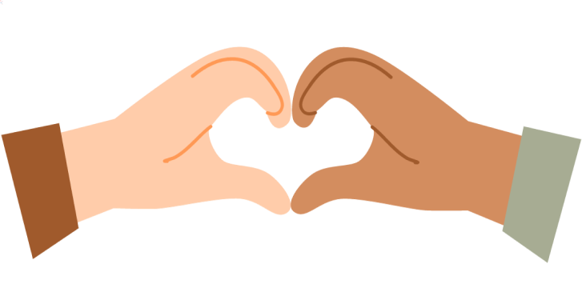
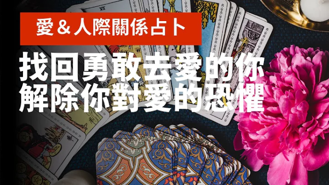
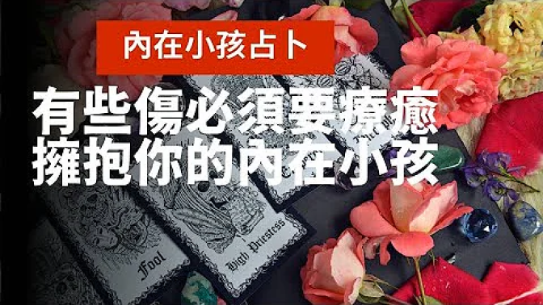

許多人會對憂鬱症有不適當的理解，在遇到親友有這方面的困擾時，常會以自身經驗去提供建議，會講一些像是：「就多想一點快樂的事啊」、「那些不好的事就不要想就好了」、「就像我一樣不期不待就不會有傷害啊」… 這一類的話。
ARTICLE
——— 專欄文章 ———

01
別叫憂鬱的人要快樂一點，會有反效果
02
從覺察他人回歸瞭解自我，你我都要社會情緒學習
台灣的學生擅長「自我管理」與「社會覺察」，卻不擅長「自我覺察」很少探究自己的內心、定位與價值觀。在無法迴避的資訊爆炸時代，面對...
03
找回接住自己的勇氣，允許愛自己
往黑暗的地方多探索一點，心理的其他地方反而因此被點亮了。我們或許都有懷疑自己是不是值得被愛的時候，也曾經在低潮時嘗試接住自己，...
04
覺察偏見與不平等，找回自我最佳狀態
日常生活中，每一個人面臨到不平等或歧視的處境，可能是由多重因子所交織在一起，有性別、族群、年齡、身心障礙、性傾向、職業等等。如...
BOOK
——— 推薦書籍 ———
跟著我們一起觀賞心靈饗宴
arrow_circle_left
arrow_circle_right

《找回你的愛與勇氣》愛情/友情/親情皆適用｜相信我，療癒永遠都不會太晚｜不完美講師Sowilo
「不再極力討好那些一定會討厭你的人。」- #阿滴 的 #抉擇的科學

《有些傷必須要療癒》保證感人！內在小孩與父母的靈魂深處想對你說什麼？｜相信我，你可以重新愛上你自己｜不完美講師Sowilo
VIDEO
——— 推薦影片 ———
跟著我們一起觀賞心靈饗宴
arrow_circle_left
arrow_circle_right
《找回你的愛與勇氣》愛情/友情/親情皆適用｜相信我，療癒永遠都不會太晚｜不完美講師Sowilo
「不再極力討好那些一定會討厭你的人。」- #阿滴 的 #抉擇的科學
《有些傷必須要療癒》保證感人！內在小孩與父母的靈魂深處想對你說什麼？｜相信我，你可以重新愛上你自己｜不完美講師Sowilo
想要跟我們交流分享心路歷程嗎? 歡迎留言分享~~